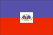
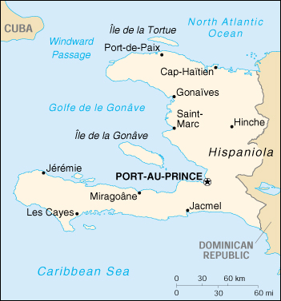

{kind=link}


| Haiti |  |
|
|  | |
| Introduction |
Background: One of the poorest countries in the Western Hemisphere, Haiti has been plagued by political violence for most of its history. Over three decades of dictatorship followed by military rule ended in 1990 when Jean-Bertrand ARISTIDE was elected president. Most of his term was usurped by a military takeover, but he was able to return to office in 1994 and oversee the installation of a close associate to the presidency in 1996.
| Geography |
Location: Caribbean, western one-third of the island of Hispaniola, between the Caribbean Sea and the North Atlantic Ocean, west of the Dominican Republic
Geographic coordinates: 19 00 N, 72 25 W
Map references: Central America and the Caribbean
Area:
total:
27,750 sq km
land:
27,560 sq km
water:
190 sq km
Area - comparative: slightly smaller than Maryland
Land boundaries:
total:
275 km
border countries:
Dominican Republic 275 km
Coastline: 1,771 km
Maritime claims:
contiguous zone:
24 nm
continental shelf:
to depth of exploitation
exclusive economic zone:
200 nm
territorial sea:
12 nm
Climate: tropical; semiarid where mountains in east cut off trade winds
Terrain: mostly rough and mountainous
Elevation extremes:
lowest point:
Caribbean Sea 0 m
highest point:
Chaine de la Selle 2,680 m
Natural resources: bauxite, copper, calcium carbonate, gold, marble, hydropower
Land use:
arable land:
20%
permanent crops:
13%
permanent pastures:
18%
forests and woodland:
5%
other:
44% (1993 est.)
Irrigated land: 750 sq km (1993 est.)
Natural hazards: lies in the middle of the hurricane belt and subject to severe storms from June to October; occasional flooding and earthquakes; periodic droughts
Environment - current issues: extensive deforestation (much of the remaining forested land is being cleared for agriculture and used as fuel); soil erosion; inadequate supplies of potable water
Environment - international agreements:
party to:
Biodiversity, Climate Change, Desertification, Law of the Sea, Marine Dumping, Marine Life Conservation
signed, but not ratified:
Hazardous Wastes, Nuclear Test Ban
Geography - note: shares island of Hispaniola with Dominican Republic (western one-third is Haiti, eastern two-thirds is the Dominican Republic)
| People |
Population:
6,867,995
note:
estimates for this country explicitly take into account the effects of excess mortality due to AIDS; this can result in lower life expectancy, higher infant mortality and death rates, lower population and growth rates, and changes in the distribution of population by age and sex than would otherwise be expected (July 2000 est.)
Age structure:
0-14 years:
41% (male 1,430,018; female 1,393,665)
15-64 years:
55% (male 1,814,964; female 1,945,165)
65 years and over:
4% (male 138,533; female 145,650) (2000 est.)
Population growth rate: 1.39% (2000 est.)
Birth rate: 31.97 births/1,000 population (2000 est.)
Death rate: 15.13 deaths/1,000 population (2000 est.)
Net migration rate: -2.97 migrant(s)/1,000 population (2000 est.)
Sex ratio:
at birth:
1.05 male(s)/female
under 15 years:
1.03 male(s)/female
15-64 years:
0.93 male(s)/female
65 years and over:
0.95 male(s)/female
total population:
0.97 male(s)/female (2000 est.)
Infant mortality rate: 97.1 deaths/1,000 live births (2000 est.)
Life expectancy at birth:
total population:
49.21 years
male:
47.46 years
female:
51.06 years (2000 est.)
Total fertility rate: 4.5 children born/woman (2000 est.)
Nationality:
noun:
Haitian(s)
adjective:
Haitian
Ethnic groups: black 95%, mulatto plus white 5%
Religions:
Roman Catholic 80%, Protestant 16% (Baptist 10%, Pentecostal 4%, Adventist 1%, other 1%), none 1%, other 3% (1982)
note:
roughly one-half of the population also practices Voodoo
Languages: French (official), Creole (official)
Literacy:
definition:
age 15 and over can read and write
total population:
45%
male:
48%
female:
42.2% (1995 est.)
| Government |
Country name:
conventional long form:
Republic of Haiti
conventional short form:
Haiti
local long form:
Republique d'Haiti
local short form:
Haiti
Data code: HA
Government type: elected government
Capital: Port-au-Prince
Administrative divisions: 9 departments (departements, singular - departement); Artibonite, Centre, Grand'Anse, Nord, Nord-Est, Nord-Ouest, Ouest, Sud, Sud-Est
Independence: 1 January 1804 (from France)
National holiday: Independence Day, 1 January (1804)
Constitution: approved March 1987; suspended June 1988, with most articles reinstated March 1989; in October 1991, government claimed to be observing the constitution; return to constitutional rule, October 1994
Legal system: based on Roman civil law system; accepts compulsory ICJ jurisdiction
Suffrage: 18 years of age; universal
Executive branch:
chief of state:
President Rene Garcia PREVAL (since 7 February 1996)
head of government:
Prime Minister Jacques-Edouard ALEXIS (since NA March 1999); ALEXIS was appointed by President PREVAL, filling the post that had been vacant since the resignation of Rosny SMARTH in June 1997
cabinet:
Cabinet chosen by the prime minister in consultation with the president
elections:
president elected by popular vote for a five-year term; election last held 17 December 1995 (next to be held by December 2000); prime minister appointed by the president, ratified by the Congress
election results:
Rene Garcia PREVAL elected president; percent of vote - Rene Garcia PREVAL 88%, Leon JEUNE 2.5%, Victor BENOIT 2.3%
Legislative branch:
bicameral National Assembly or Assemblee Nationale consists of the Senate (27 seats; members serve six-year terms; one-third elected every two years) and the Chamber of Deputies (83 seats; members are elected by popular vote to serve four-year terms)
elections:
Senate - last held 25 June 1995, with reruns on 13 August and runoffs on 17 September, and an election for nine seats 6 April 1997 but results were disputed; next election for two-thirds of Senate postponed until May 2000; Chamber of Deputies - last held 25 June 1995, with reruns on 13 August and runoffs on 17 September (next Senate and Chamber of Deputies elections postponed until May 2000)
election results:
Senate - percent of vote by party - NA; seats by party - OPL 7, FL-leaning 7, independents 3, vacant 10; Chamber of Deputies - percent of vote by party - NA; seats by party - OPL 32, antineoliberal bloc 24, minor parties and independents 22, vacant 5
Judicial branch: Supreme Court or Cour de Cassation
Political parties and leaders: Alliance for the Liberation and Advancement of Haiti or ALAH [Reynold GEORGES]; Assembly of Progressive National Democrats or RDNP [Leslie MANIGAT]; Confederation for Democratic Unity or KID [Evans PAUL]; Democratic Consultation Group coalition or ESPACE [Evans PAUL] composed of the following parties: Confederation for Democratic Unity KONAKOM, PANPRA, Generation 2004, and Haiti Can or Ayiti Kapab; Generation 2004 [Claude ROUMAIN]; Haiti Can or Ayiti Kapab [Ernst VERDIEU]; Haitian Christian Democratic Party or PDCH [Fritz PIERRE]; Haitian Democratic Party or PADEMH [Clark PARENT]; Lavalas Family or FL [Jean-Bertrand ARISTIDE]; Mobilization for National Development or MDN [Hubert DE RONCERAY]; Movement for National Reconstruction or MRN [Rene THEODORE]; Movement for the Installation of Democracy in Haiti or MIDH [Marc BAZIN]; Movement for the Organization of the Country or MOP [Gesner COMEAU and Jean MOLIERE]; National Alliance for Democracy and Progress [leader NA]; National Congress of Democratic Movements or KONAKOM [Victor BENOIT]; National Front for Change and Democracy or FNCD [Evans PAUL and Turneb DELPE]; National Progressive Revolutionary Party or PANPRA [Serge GILLES]; Open the Gate Party or PLB [Renaud BERNARDIN]; Struggling People's Organization or OPL [Gerard PIERRE-CHARLES]; Union of Patriotic Democrats or UPD [Rockefeller GUERRE]
Political pressure groups and leaders: Autonomous Haitian Workers or CATH; Confederation of Haitian Workers or CTH; Federation of Workers Trade Unions or FOS; National Popular Assembly or APN; Papaye Peasants Movement or MPP; Popular Organizations Gathering Power or PROP; Roman Catholic Church
International organization participation: ACCT, ACP, Caricom (observer), CCC, ECLAC, FAO, G-77, IADB, IAEA, IBRD, ICAO, ICRM, IDA, IFAD, IFC, IFRCS, ILO, IMF, IMO, Intelsat, Interpol, IOC, IOM, ITU, LAES, OAS, OPANAL, OPCW, PCA, UN, UNCTAD, UNESCO, UNIDO, UPU, WCL, WFTU, WHO, WIPO, WMO, WToO, WTrO
Diplomatic representation in the US:
chief of mission:
Ambassador (vacant); Charge d'Affaires Louis Harold JOSEPH
chancery:
2311 Massachusetts Avenue NW, Washington, DC 20008
telephone:
[1] (202) 332-4090
FAX:
[1] (202) 745-7215
consulate(s) general:
Boston, Chicago, Miami, New York, and San Juan (Puerto Rico)
Diplomatic representation from the US:
chief of mission:
Ambassador (vacant); Charge d'Affairs Les ALEXANDER to be temporary chief of mission until new ambassador is confirmed
embassy:
5 Harry Truman Boulevard, Port-au-Prince
mailing address:
P. O. Box 1761, Port-au-Prince
telephone:
[509] 22-0354, 22-0368, 22-0200, 22-0612
FAX:
[509] 23-1641
Flag description: two equal horizontal bands of blue (top) and red with a centered white rectangle bearing the coat of arms, which contains a palm tree flanked by flags and two cannons above a scroll bearing the motto L'UNION FAIT LA FORCE (Union Makes Strength)
| Economy |
Economy - overview: About 80% of the population lives in abject poverty. Nearly 70% of all Haitians depend on the agriculture sector, which consists mainly of small-scale subsistence farming and employs about two-thirds of the economically active work force. The country has experienced little job creation since President PREVAL took office in February 1996, although the informal economy is growing. Failure to reach agreements with international sponsors have denied Haiti badly needed budget and development assistance. Meeting aid conditions in 2000 will be especially challenging in the face of mounting popular criticism of reforms.
GDP: purchasing power parity - $9.2 billion (1999 est.)
GDP - real growth rate: 2.4% (1999 est.)
GDP - per capita: purchasing power parity - $1,340 (1999 est.)
GDP - composition by sector:
agriculture:
32%
industry:
20%
services:
48% (1998 est.)
Population below poverty line: 80% (1998 est.)
Household income or consumption by percentage share:
lowest 10%:
NA%
highest 10%:
NA%
Inflation rate (consumer prices): 9% (1999 est.)
Labor force:
3.6 million (1995)
note:
shortage of skilled labor, unskilled labor abundant (1998)
Labor force - by occupation: agriculture 66%, services 25%, industry 9%
Unemployment rate: 70%; widespread underemployment; more than two-thirds of the labor force do not have formal jobs (1999)
Budget:
revenues:
$323 million
expenditures:
$363 million, including capital expenditures of $NA (FY97/98 est.)
Industries: sugar refining, flour milling, textiles, cement, tourism, light assembly industries based on imported parts
Industrial production growth rate: 0.6% (1997 est.)
Electricity - production: 728 million kWh (1998)
Electricity - production by source:
fossil fuel:
55.63%
hydro:
41.62%
nuclear:
0%
other:
2.75% (1998)
Electricity - consumption: 677 million kWh (1998)
Electricity - exports: 0 kWh (1998)
Electricity - imports: 0 kWh (1998)
Agriculture - products: coffee, mangoes, sugarcane, rice, corn, sorghum; wood
Exports: $322 million (f.o.b., 1999)
Exports - commodities: manufactures, coffee, oils, mangoes
Exports - partners: US 86%, EU 11% (1998)
Imports: $762 million (c.i.f., 1999)
Imports - commodities: food, machinery and transport equipment, fuels
Imports - partners: US 60%, EU 12% (1998)
Debt - external: $1 billion (1997 est.)
Economic aid - recipient: $730.6 million (1995)
Currency: 1 gourde (G) = 100 centimes
Exchange rates: gourdes (G) per US$1 - 18.262 (January 2000), 17.965 (1999), 16.505 (1998), 17.311 (1997), 15.093 (1996), 16.160 (1995)
Fiscal year: 1 October - 30 September
| Communications |
Telephones - main lines in use: 60,000 (1995)
Telephones - mobile cellular: 0 (1995)
Telephone system:
domestic facilities barely adequate; international facilities slightly better
domestic:
coaxial cable and microwave radio relay trunk service
international:
satellite earth station - 1 Intelsat (Atlantic Ocean)
Radio broadcast stations: AM 41, FM 26, shortwave 0 (1999)
Radios: 415,000 (1997)
Television broadcast stations: 2 (plus a cable TV service) (1997)
Televisions: 38,000 (1997)
Internet Service Providers (ISPs): 6 (1999)
| Transportation |
Railways:
total:
40 km (single track; privately owned industrial line) - closed in early 1990s
narrow gauge:
40 km 0.760-m gauge
Highways:
total:
4,160 km
paved:
1,011 km
unpaved:
3,149 km (1996 est.)
Waterways: NEGL; less than 100 km navigable
Ports and harbors: Cap-Haitien, Gonaives, Jacmel, Jeremie, Les Cayes, Miragoane, Port-au-Prince, Port-de-Paix, Saint-Marc
Merchant marine: none (1999 est.)
Airports: 13 (1999 est.)
Airports - with paved runways:
total:
3
2,438 to 3,047 m:
1
1,524 to 2,437 m:
1
914 to 1,523 m:
1 (1999 est.)
Airports - with unpaved runways:
total:
10
914 to 1,523 m:
5
under 914 m:
5 (1999 est.)
| Military |
Military branches:
Haitian National Police (HNP)
note:
the regular Haitian Army, Navy, and Air Force have been demobilized but still exist on paper until constitutionally abolished
Military manpower - military age: 18 years of age
Military manpower - availability:
males age 15-49:
1,579,897 (2000 est.)
Military manpower - fit for military service:
males age 15-49:
857,666 (2000 est.)
Military manpower - reaching military age annually:
males:
83,863 (2000 est.)
Military expenditures - dollar figure: $NA ; note - mainly for police and security activities
Military expenditures - percent of GDP: NA%
Military - note: the Haitian Armed Forces have been demobilized and replaced by the Haitian National Police
| Transnational Issues |
Disputes - international: claims US-administered Navassa Island
Illicit drugs: major Caribbean transshipment point for cocaine en route to the US and Europe